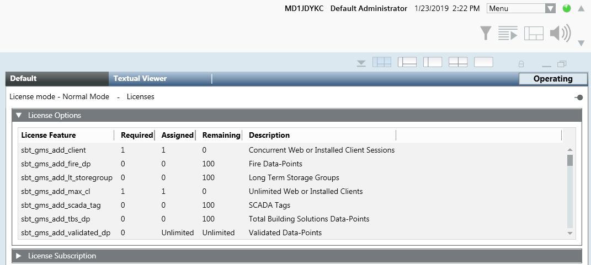
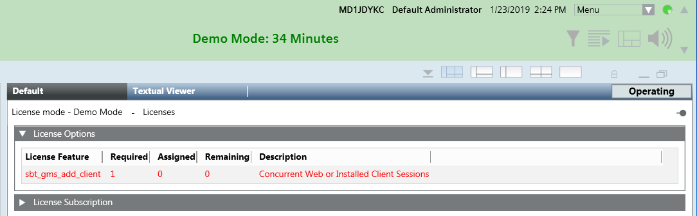
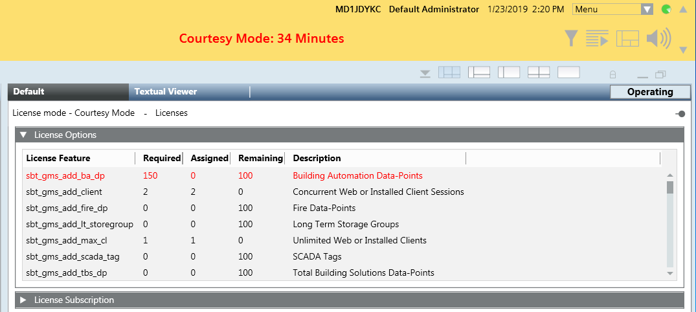
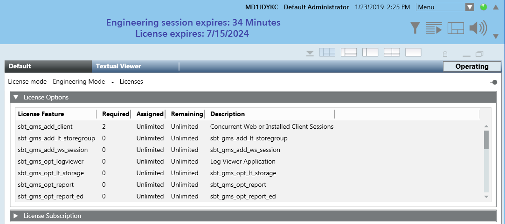

License Modes
This section provides additional information about Desigo CC license modes.
Normal License Mode
Desigo CC is functioning normally with a valid and sufficient license (sufficient license features to cover the field hardware). In this case, you will not see any special messages on the expanded Summary bar. Only when you select the Licenses object in System Browser you will see that Normal Mode is indicated in the Default tab.

For a detailed description of the columns in the License Options expander, see License Options.
Demo License Mode
On initial startup, or during normal operation, if no valid license is found the Desigo CC server switches to Demo Mode, and the system operates for 30 minutes. When the 30-minute Demo Mode time limit expires, the Desigo CC server stops the project and the users are forced to log off. If the project is subsequently restarted, the system will run in Demo Mode for another 30 minutes.

For a detailed description of the columns in the License Options expander, see License Options.
Demo Mode Characteristics
- When it is active, you will see that Demo Mode is indicated in green on the Summary bar with a timer that shows how much time is left.
- If you view the license data, the license set will be highlighted in red. Assigned and Remaining will indicate 0.
- If a valid license is detected before the 30-minute Demo Mode time expires, Desigo CC switches back to Normal Mode.

In Demo Mode, you can only switch from Engineering to Operating mode. Once you are in Operating mode you cannot switch back to Engineering mode.
Courtesy License Mode
The Desigo CC server switches to Courtesy Mode when the license set is installed, but one of the following situations occurs:
- An insufficient set of license features for field points is detected. That is, the site project was configured with a certain number of physical objects, but only a subset of these are licensed. For example, if the site project was configured with 2000 building automation data points but only 1000 are licensed, Courtesy Mode activates.
- The system detects three or more sabotage attempts within a 30-minute period.
Sabotage means any unauthorized attempt to modify the system’s license data directly in the database (for example, inappropriate changes to the time remaining in a specific license mode). Only the system itself is allowed to write to the license data.
In the event of sabotage by unauthorized software: - If the system detects fewer than three sabotage attempts within 30 minutes, at the end of the 30 minutes the sabotage attempt counter is reset.
- If the system detects three sabotage attempts within 30 minutes, Desigo CC switches to Courtesy Mode but the license features are still considered valid. An alarm is also generated to inform the operator.
- If the system detects more than three sabotage attempts within 30 minutes, Desigo CC switches to Courtesy Mode and the license features are invalidated (even if the license features are installed the system treats them as no longer valid).
- One or several installed components (platform or subsystem) were released after the expiration date of the Desigo CC license subscription.
When Courtesy Mode activates, Desigo CC can continue to operate for a total of 30 days cumulatively.

For a detailed description of the columns in the License Options expander, see License Options.
Courtesy Mode Characteristics
- When it is active, you will see that Courtesy Mode is indicated in red on the Summary bar, with a countdown timer that shows how much time is left.
- If you check the licenses, any license features that are insufficient will be highlighted in red. The Required, Assigned, and Remaining columns will indicate the discrepancy: Remaining shows how many of the installed copies of that license feature are still unused while Assigned shows how many copies of that license feature are being used by the system.
- During Courtesy Mode, if a sufficient set of license features is detected during a license check (that is, the site project was reconfigured so that all the field objects are licensed), the Desigo CC server switches back to Normal Mode.
- If the Desigo CC server switches back to Courtesy Mode, the countdown timer does not restart from 30 days, but from the previous time remaining in Courtesy Mode.
- After the Desigo CC server has run in Normal Mode for 180 days without switching to Courtesy Mode, the next time it switches to Courtesy Mode, the countdown timer starts at 30 days.
- If the time allowed for operation in Courtesy Mode expires, Desigo CC shuts down and it is necessary to install again all the license features required to run the system.
Engineering Mode License
The Engineering Mode license is a special license used by authorized technicians for the configuration of a site project. It enables the system to temporarily operate (for 48 hours at a time) without any limits on the number of field points, or any other restrictions that would ordinarily apply to the software’s functionality.
Do not confuse this Engineering Mode license with the Engineering mode of System Manager. You can switch System Manager to Engineering mode even without an Engineering Mode license.
Switch over to the Engineering Mode License
When the Engineering Mode license is installed, you can initiate a 48-hour session by plugging in the dongle associated with the license: The system switches over to the Engineering Session license, and this is visually indicated in blue text on the Summary bar:
- A countdown timer shows how much time is left in the current 48-hour session. When this countdown expires, you must wait one hour before you can switch over to the Engineering Mode license again.
- The Engineering Mode license expiration date (after which it can no longer be used at all) is also shown. The color of this text changes when the date is less than 30 days away.

You can double-click the blue Engineering Session text in the Summary bar to display all the details of the Engineering Mode license. The Assigned and Required columns will show Unlimited for the license features.
For a detailed description of the columns in the License Options expander, see License Options.
Switch away from the Engineering Mode License
When the 48-hour Engineering Mode license countdown expires (or when you unplug the dongle), Desigo CC switches over to one of the following license modes:
- Normal Mode (Desigo CC fully functional), if a valid and sufficient license is installed.
- Courtesy Mode (Desigo CC can operate for 30 days), if a valid license is found, but it is not sufficient to cover all field points (or if there have been excessive sabotage attempts).
- Demo Mode (Desigo CC can operate for 30 minutes only), if no valid license is found.
You can still perform configuration tasks in these modes—but without the unlimited license features provided by the Engineering Mode license.
In Normal Mode and Courtesy Mode you can freely switch System Manager between Operating and Engineering mode. However, in Demo Mode you can only switch from Engineering to Operating mode (once you are in Operating mode you cannot switch back to Engineering mode).
Switch back to the Engineering Mode License
After the system has been shut down or running in another license mode for at least one hour, you can switch back to the Engineering Mode license again (for another 48 hours). To do this, unplug the dongle, wait a while for the license check, and plug in the dongle again or restart the project (restarting all the services).
If the system is running in Courtesy Mode because the sabotage limit was reached, it will not switch over to the Engineering Mode license when the dongle is plugged in.
Client Sessions Exceeded for a Standard License
When you launch a Desigo CC client, a client session license is consumed only after a successful login from that client.
In a situation where both of the following are available:
- A standard license with a given number of client sessions
- An Engineering Mode license with an unlimited number of client sessions
it might happen that during the Engineering Mode session the number of consumed client sessions exceeds those allowed by the standard license. In this case, when the Engineering Mode license dongle is disconnected, the following happens:
- The licenses application indicates the excess client sessions.
- No new Desigo CC clients can log on. Consequently, no further license sessions can be consumed.
- The excess client sessions can continue to be used until they are ended (such as, log off and so on).
- Desigo CC will not switch to Courtesy Mode.